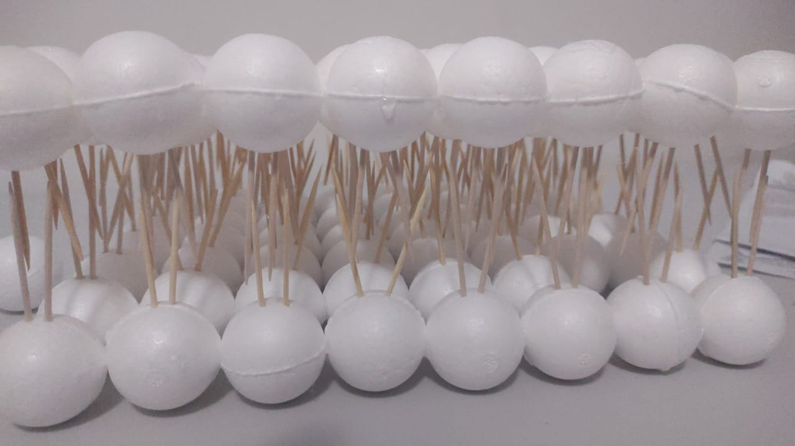

Nesta seção, detalhamos os materiais utilizados na criação da nossa maquete da membrana plasmática:
- Bolas de isopor tamanho 0,35;
- Palitos de dente para as caudas dos fosfolipídios;
- Massinha de modelar para as proteínas;
- Base de isopor;
- Cano pvc coberto de massinha para as protéinas transportadoras;
- Cola quente para grudar as bolinhas.
